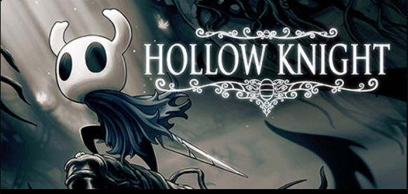

類銀河惡魔成遊戲介紹
空洞騎士

遊戲介紹
遊戲背景
空洞騎士是一款以蟲子為主角的冒險遊戲，講述了一個被遺忘的地下王國——聖巢的故事。
玩家扮演的小騎士是一個沒有記憶和感情的容器，它的使命是封印一個古老而強大的神明——輻光，
以阻止它對聖巢的感染和破壞。
在遊戲中，小騎士會遇到各種各樣的角色和敵人，探索聖巢的秘密和歷史，發現自己的身世和命運。
遊戲玩法
主要分為探索、平台移動、戰鬥三大層面。 作為平台類型的遊戲，玩家可使用各種移動與戰鬥技巧，諸如衝刺、蹬墻跳、二段跳躍、
法術攻擊等等，以助於探索遊戲中廣大的世界。 作為類銀河惡魔城的遊戲，
地圖分為數個大區域，每個區域由無數的場景連結而成，某些地區需要先取得特定物品或能力後才能進入。